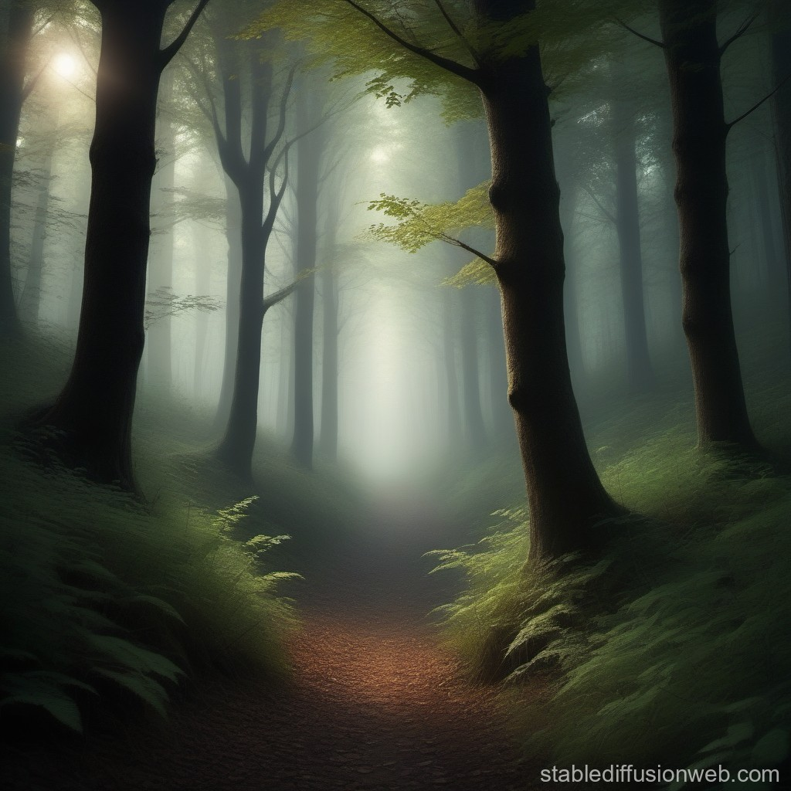

As you venture down the path to the right, the forest around you seems to grow denser and more mysterious. The flickering lights cast eerie shadows among the trees, and the air is filled with an otherworldly hush.
Suddenly, you catch the faint sound of rustling leaves and twigs snapping in the distance. Your heart quickens with a mixture of curiosity and apprehension. What could be making those noises?

CHOOSE A PATH